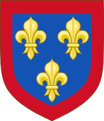

Greve av Anjou. Blev högst 40 år.
920 Tours, Frankrike. [1]
960 Tours, Frankrike. [1]
Fulk II av Anjou (ca 905 — 960), kallad le Bon ("den gode") var greve av Anjou från 942 till sin död.
Livet
Fulk II född c. 905 [1] var en son till Fulk den röde och hans hustru Roscilla de Loches, dotter till Warnerius, Seigneur de Villentrois . [2] Han efterträdde sin far 942 som andre greve av Anjou , [3] och förblev vid makten till 960. [4]
Angevinerna , inklusive Fulk II, hade blivit särskilt skickliga på att upprätta äktenskapsallianser som främjade deras mål. [5] Hans far, Fulk den röde , hade ordnat hans äktenskap med en karoliner , Gerberga, dotter till Ratburnus I Viscount of Vienne . [6] Bland annat öppnade denna allians dörrarna för Fulks dotter Adelaide-Blanche att gifta sig med en framtida kung av Frankrike och hans son Guy för att bli biskop av le Puy . [6]
Efter Gerbergas död ca. 952 ingick Fulk ännu ett skarpsinnigt politiskt äktenskap med Adelaide, änkan efter Alan II, hertig av Bretagne . Alan II hade också varit greve av Nantes och genom detta äktenskap fick Fulk inflytande i, och möjligen kontroll över, Nantes . [7] Adelaide var också syster till Theobald I, greve av Blois, vilket tillät Fulk II att bilda en allians med House of Blois . [6] Han sägs ha beordrat mordet på Drogo, hertig av Bretagne , Alan II:s son med Adelaide enligt Chronique de Nantes .
Familj
Av sin make Gerberge [8] fick Fulk II flera barn:
Adelaide-Blanche av Anjou , gift fyra eller fem gånger. [2]
Geoffrey I , greve av Anjou, gifte sig med Adelaide av Vermandois . [2]
Bouchard, greve av Vendome. [2]
Guy av Anjou, biskop av le Puy. [2]
Humbert d'Anjou, omnämnd 957. [2]
Fulk II hade inget känt problem med Adelaide.
Död
Fulk dog 960, vid 55 års ålder. [9] Han efterträddes av sin 20-åriga son Geoffrey Greymantle . [2]